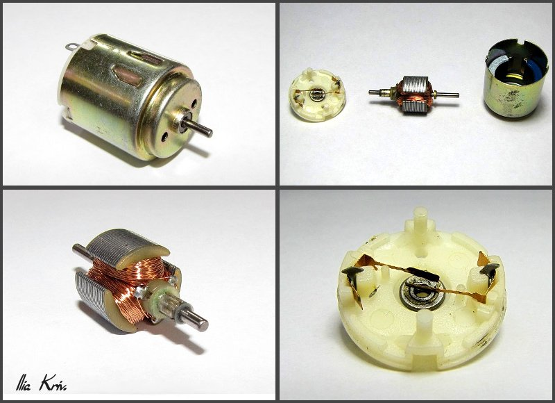
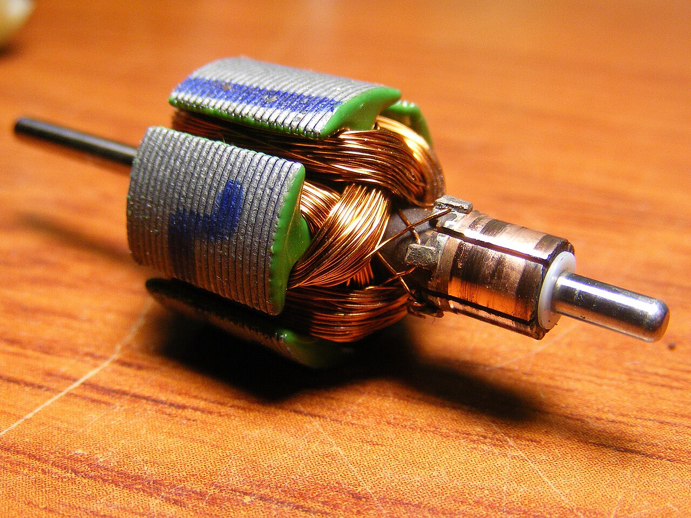

DC Motors and Motor Drivers
DiffBot and Remo each have two drive wheels, each powered by a DG01D-E brushed DC motor. A motor driver reverses the voltage across the motor to change direction. It adjusts the average voltage with pulse-width modulation (PWM) to control how fast the wheel turns. Remo uses the Adafruit DC Motor + Stepper FeatherWing with TB6612 chips. DiffBot uses the Grove I2C Motor Driver V1.3 with an L298.
This page follows one motor: why a voltage turns it, how the four switches of an H-bridge reverse that voltage, how PWM sets its average, and how much voltage a driver loses. The values come from the parts' datasheets, from Adafruit's library and from Remo's firmware. None of them is a measurement on a robot.
The brushed DC motor

A voltage across the two terminals of a brushed DC motor drives a current through its windings. Current in the motor windings produces a magnetic field. Its interaction with the stator field produces torque on the shaft. The shaft starts turning when that torque overcomes the load and friction. The stator is the fixed part of the motor, around the windings that turn with the shaft. Brushes make contact with a rotating switch called a commutator. The commutator directs the current through successive windings as the shaft turns (Microchip's application note AN905, Brushed DC Motor Fundamentals, Principles of Operation). Permanent-magnet motors are the most common type of brushed DC motor (AN905, Permanent Magnet). In such a motor, magnets make the stator field, and reversing the terminal voltage drives the current in the opposite direction. The torque reverses as the current reverses. At the same load, a higher voltage gives a higher steady speed. Load, heat and wear change the speed too (AN905, Feedback Mechanisms).
The figure shows how the brushes and the commutator keep the torque in one direction. It looks along the shaft of a motor with a single winding, from the commutator's end. Follow side a of the winding from the first view to the second, half a turn later.
The small motors in the photos have several windings and commutator segments.




The DG01D-E's datasheet lists a voltage of 3 V to 9 V, a gear ratio of 1:48 and a speed of 90 RPM at 4.5 V. It doesn't name the load for that speed. The gearbox lets the wheel turn more slowly than the motor shaft and increases the torque available at the wheel. Motor and Encoder explains how the encoder ticks relate to one wheel revolution.
So a motor driver has two jobs. It sets the polarity of the voltage across the motor for the direction, and the average of that voltage for the speed.
The H-bridge
An H-bridge connects a motor to its supply in either direction. It has four switches, Q1 to Q4, in two half-bridges, one on each side of the motor. Each half-bridge can connect its motor terminal to the supply rail, +V, or to ground (AN905, Figure 8). When both switches on a side are open, that terminal can float. A floating terminal is connected to neither +V nor ground. Drawn as a circuit, the two half-bridges and the motor between them look like the letter H, which gives the circuit its name.
The table shows one switching pattern for each mode. Forward and reverse name opposite voltage polarities. Which way a wheel turns depends on how its motor leads are connected.
| Mode | Closed switches | TB6612 (Remo) | L298 (DiffBot) |
|---|---|---|---|
| Forward | Q1 and Q4 | CW | Forward |
| Reverse | Q2 and Q3 | CCW | Reverse |
| Coast | none | Stop | Free running motor stop |
| Brake | Q2 and Q4 | Short brake | Fast motor stop |
The closed switches are those of AN905, Table 1. The two columns on the right give each chip's own name for the mode:
- TB6612: With its standby input STBY high and its PWM input high, the TB6612 selects clockwise (CW) for its input IN1 high and IN2 low, counterclockwise (CCW) for the opposite pair, and Stop for two low inputs. Stop turns both outputs off, so both motor terminals float. Short brake connects both outputs to ground (TB6612FNG datasheet, H-SW Control Function).
- L298: A low enable input lets the motor coast. With enable high, opposite levels at the inputs C and D drive the motor, and equal levels brake it (L298 datasheet, Figure 6). The figure shows the low-side brake.
Closing both switches on the same side would short +V to ground. This is called shoot-through, and it can destroy the switches (AN905, next to Table 1). The TB6612 inserts a brief interval with the switches off during transitions to prevent it (TB6612FNG datasheet, H-SW Operating Description).
The four panels show ideal switches. A real bridge also has a diode across each switch, D1 to D4 in AN905, Figure 8. When the switches turn off, the winding still carries current. The diodes give that current a path and protect the switches.
PWM and the duty cycle
To lower the average voltage, a motor driver doesn't make a lower voltage. It switches the full supply voltage \(V_\text{supply}\) on and off many times per second. This is called pulse-width modulation (PWM).
In the example below, the bridge alternates between Forward and low-side Brake. With ideal switches, the voltage across the motor is the supply voltage during the drive pulse and 0 V while both terminals are connected to ground. The on-time is \(t_\text{on}\). One full cycle takes the time \(T\), the period, so the duty cycle \(D\) is
The average terminal voltage \(V_\text{average}\) is the duty cycle times the supply voltage (AN905, Equation 1):
The winding's inductance smooths the current, which can keep flowing between the voltage pulses (AN905, Speed Control).
The figure's supply of 9.6 V is the nominal voltage of Remo's eight NiMH cells (Remo's NiMH cells on the Power Supply page). The plot shows voltage, not speed. A wheel at a duty cycle of 50 % need not turn at half of its full speed, because the speed also depends on the load (AN905, Feedback Mechanisms).
On Remo, while driving is enabled, each wheel's PID controller produces a signed motor command \(u\) from −255 to 255 on each scheduled control step.
The feedback loop of one wheel follows one such command.
The sign selects forward or reverse, and the magnitude \(\lvert u \rvert\) sets the duty cycle.
For each step of the magnitude, Adafruit's library switches the voltage on for 16 of the 4096 counts of a PWM period (Adafruit_DCMotor::setSpeed(), version 1.1.4):
The table gives the three commands of the figure and the highest command:
| Command magnitude \(\lvert u \rvert\) | Counts of 4096 | Duty cycle \(D\) |
|---|---|---|
| 64 | 1024 | 25 % |
| 128 | 2048 | 50 % |
| 192 | 3072 | 75 % |
| 255 | 4080 | 99.6 % |
How Remo sets direction, duty cycle and frequency
Remo's microcontroller (MCU), a Teensy, commands the FeatherWing over I2C.
When the wheel command is valid and a control step is due, BaseController::write() passes each wheel's command to AdafruitMotorController::setSpeed() as value.
In the excerpt, follow the sign of value to the call of pMotor_->run(), and its magnitude to the call of pMotor_->setSpeed():
| adafruit_feather_wing.cpp: setSpeed() | |
|---|---|
16 17 18 19 20 21 22 23 24 25 26 27 28 29 30 31 32 33 34 35 36 | |
pMotor_ points to an Adafruit_DCMotor, a motor object of Adafruit's library.
The library turns the two calls into signals for the TB6612.
The firmware's platformio.ini asks for the library with @^1.0.11, which permits version 1.1.4, the version that this page describes.
- Direction:
Adafruit_DCMotor::run()sets the TB6612's input IN1 high and IN2 low forFORWARD, the chip's mode CW. ForBACKWARD, it sets IN1 low and IN2 high, CCW. The FeatherWing's schematic connects the library's two direction pins to the chip's inputs of the same names. - Zero command: A zero command calls
run(RELEASE), which sets both direction inputs low, thensetSpeed(0), which requests zero PWM duty. Adafruit's library reference says thatRELEASEcuts power to the motor and applies no braking. The firmware sends this same command to both motors when the wheel command expires. - Duty cycle:
Adafruit_DCMotor::setSpeed()multiplies the magnitude by 16 and sets the TB6612's PWM input high for that many of the 4096 counts of each period. - Between the drive pulses: During a nonzero forward or reverse command, each low PWM interval puts the TB6612 in short brake. Both motor terminals connect to ground until the next drive pulse (TB6612FNG datasheet, H-SW Control Function).
- Frequency: A PCA9685 chip on the FeatherWing generates the direction and PWM signals (Adafruit's guide, Pinouts). Remo requests 1600 Hz: the firmware's
setup()callsAdafruitMotorController::begin()without an argument, and 1600 is its default. Adafruit's library multiplies that request by 0.9, then rounds the calculated prescaler value of 3.24 to 3 (Adafruit_MS_PWMServoDriver::setPWMFreq()). With the PCA9685's typical 25 MHz clock, the nominal PWM frequency is 25,000,000 Hz / (4096 × (3 + 1)), about 1526 Hz. One period lasts about 0.66 ms at that frequency. The value 3 is the smallest that the chip's prescaler takes, so 1526 Hz is its highest PWM frequency (PCA9685 datasheet, section 7.3.5).
These statements come from the code, the library and the datasheets. The frequency is a calculation: the frequency of the PCA9685's clock on Remo isn't measured. The PC unit tests run without the motor driver. A Teensy test sketch sends positive, negative and zero commands to the FeatherWing. It has no assertion about the signals at the motor terminals.
DiffBot's Grove driver is wired to the Raspberry Pi instead, through the Grove I2C hub.
The node for that path, motor_driver.py of the grove_motor_driver package, is commented out as deprecated in minimal.launch.
So the launch files at the pinned commit start no node that sends motor commands to DiffBot's driver.
The voltage that the driver loses
During a drive pulse, the current passes through two switches. Their voltage drops reduce the voltage across the motor:
- L298 (DiffBot): At 1 A, ST lists a total drop of 1.8 V minimum and 3.2 V maximum for the two transistors, under its test conditions: a motor supply of 42 V, a logic supply of 5 V and a junction temperature of 25 °C (L298 datasheet, Electrical Characteristics). The L298 uses bipolar output transistors.
- TB6612 (Remo): At 1 A, Toshiba lists a typical total drop of 0.5 V for the two switches, with both supplies at 5 V (TB6612FNG datasheet, Electrical Characteristics). The TB6612 uses MOSFETs.
These values are for the chips alone, at the datasheets' test current. Power Supply follows the voltage from each robot's batteries through its driver board to the motors.
Comments
Comments are GitHub Discussions, shown with giscus. Loading them connects to giscus.app (hosted by Vercel, USA) and GitHub (USA); you need a GitHub account to comment.